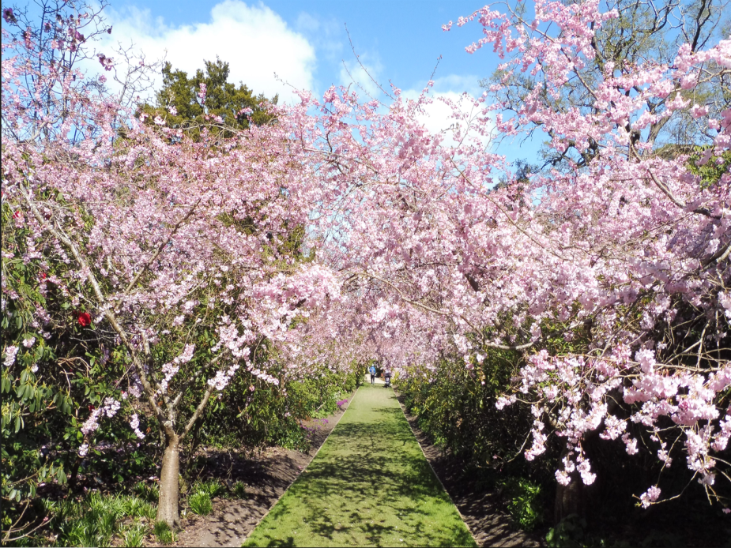

University of Otago

The University of Otago, New Zealand’s oldest university, offers a rich academic environment in a picturesque setting. Its central library is a vibrant hub supporting student learning, research, and community engagement across all disciplines.
Dunedin Botanic Garden

The Dunedin Botanic Garden is New Zealand’s first and oldest, offering a peaceful retreat with vibrant floral displays, native plants, and scenic walking paths. It’s a beloved place for both relaxation and exploration in the heart of Dunedin.
Dunedin Tunnel Beach

Tunnel Beach is one of Dunedin’s most breathtaking coastal destinations. Accessible through a hand-carved sandstone tunnel, the beach reveals dramatic sea cliffs, archways, and rock formations shaped by centuries of wind and waves. At low tide, visitors can walk along the secluded shore, explore sea caves, and admire the stunning natural scenery. It’s a perfect spot for a peaceful walk, a romantic view, or capturing unforgettable photos.